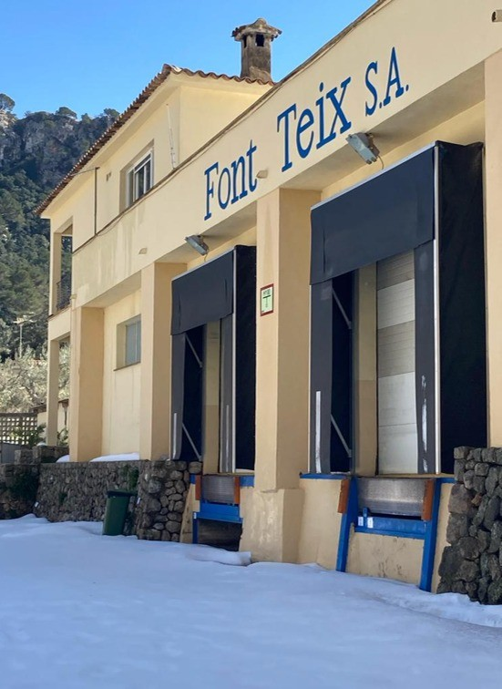
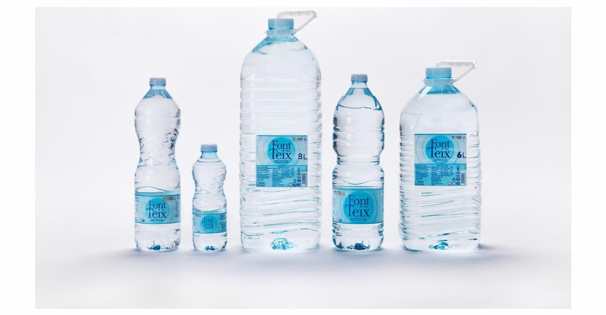

En Font des Teix sabemos que la calidad empieza en el origen. Nuestra agua mineral natural de débil mineralización nace en la Serra de Tramuntana, donde la lluvia se infiltra lentamente a través de la roca hasta emerger de forma natural en el manantial Font des Teix, en las proximidades de Bunyola.
Cada botella recoge la pureza de un entorno único y el resultado de un proceso natural que ha dado forma a nuestra agua durante años. Nuestra misión es preservar esas cualidades desde el manantial hasta el consumidor, manteniendo intactas sus características naturales mediante un envasado realizado en origen.
Trabajamos cada día con un firme compromiso con la calidad, la seguridad alimentaria, la sostenibilidad y el respeto por el entorno que hace posible nuestra agua. Como empresa de proximidad, creemos en el valor de las cosas bien hechas, combinando tradición, responsabilidad y mejora continua para ofrecer un producto auténtico ligado a la tierra que lo ve nacer.
Font des Teix es naturaleza, origen y compromiso.
Nacida en la Serra de Tramuntana. Envasada en origen. Conservada tal como la naturaleza la creó.
La Dirección de FONT TEIX, consciente de la importancia de satisfacer las necesidades y expectativas de sus clientes y demás partes interesadas, así como de desarrollar su actividad de envasado de agua mineral natural de manera responsable con el entorno, establece la presente Política de Calidad, Seguridad Alimentaria y Responsabilidad Ambiental.
A través de su Sistema de Gestión, la organización garantiza la calidad y seguridad de sus productos, el cumplimiento de los requisitos aplicables y la mejora continua de sus procesos, basándose en los siguientes principios:
La calidad, la seguridad alimentaria y el respeto por el entorno forman parte de los valores fundamentales de la empresa y de la gestión diaria de sus actividades.
Nos comprometemos a desarrollar nuestra actividad de forma responsable, promoviendo la prevención de la contaminación, el uso eficiente de los recursos naturales, la reducción de residuos y la protección del entorno y del recurso hídrico en el que operamos.
Garantizamos el cumplimiento de los requisitos legales, reglamentarios y de cliente aplicables a nuestra actividad, así como de los requisitos establecidos por los estándares de certificación adoptados por la organización, incluyendo la prevención del fraude alimentario y la protección de nuestros productos (Food Defense).
Nos comprometemos a comprender y satisfacer las necesidades y expectativas de nuestros clientes, garantizando productos seguros, legales y de calidad.
Establecemos y revisamos periódicamente objetivos para la mejora continua de la calidad, la seguridad alimentaria y el desempeño de nuestros procesos.
Comunicamos esta Política y los compromisos adquiridos en materia de calidad, seguridad alimentaria y responsabilidad ambiental a todo el personal de la organización, y la mantenemos a disposición de las partes interesadas que la soliciten.
Promovemos un entorno de trabajo seguro, saludable y participativo, fomentando la implicación y concienciación del personal en materia de seguridad, calidad, seguridad alimentaria y protección ambiental.
La Dirección se compromete a mantener esta política como marco de referencia para la definición y revisión de los objetivos de la organización, evaluando periódicamente su adecuación y eficacia mediante la revisión del Sistema de Gestión.

Al pie de los manantiales Font Teix, en el término de Bunyola, se encuentran las instalaciones encargadas de envasar el agua que nace en el corazón de la Serra de Tramuntana.
Nuestra planta cuenta con las certificaciones IFS Food e ISO 14001, que acompañan cada uno de los principios recogidos en esta política y garantizan que el agua llega al consumidor con la misma calidad e integridad que tiene en su punto de surgencia.

Cada formato que sale de nuestra planta —del biberón de bolsillo a la garrafa de ocho litros— responde a un mismo Sistema de Gestión, pensado para satisfacer las necesidades y expectativas de quien la consume.
Detrás de cada etiqueta hay un compromiso firmado por la Dirección: el mismo que puede leerse íntegro en esta página, y que se revisa y actualiza de forma periódica.
Nuestra historia está estrechamente ligada a la Serra de Tramuntana, un territorio excepcional reconocido por su riqueza natural, paisajística y cultural.
Por ello, Font des Teix cuenta con la condición de Producto Local y además cuenta con el Distintiu Serra de Tramuntana Patrimoni Mundial, un reconocimiento otorgado por el Consorci Serra de Tramuntana a las empresas y entidades comprometidas con la preservación y promoción de los valores que hicieron de este paisaje un enclave declarado Patrimonio Mundial por la UNESCO.
Estos reconocimientos reflejan nuestro compromiso con el territorio, la sostenibilidad y la conservación del entorno, así como nuestra voluntad de contribuir al desarrollo de una economía local vinculada a la identidad y los valores de Mallorca.
Porque elegir Font des Teix es elegir un agua nacida en Mallorca, envasada en su origen y estrechamente vinculada a uno de los paisajes más emblemáticos del Mediterráneo.
En Bunyola, Junio 2026
Firmado: Dirección de Font Teix